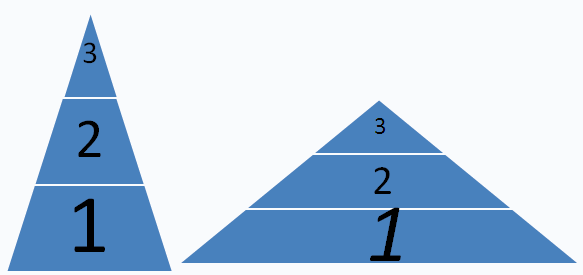

不要推掉整座金字塔！
#1 不要推掉整座金字塔！ 作者：悟子 发表时间：2007-7-12 12:37:34
大家对修改五子棋规则讨论热烈，很多高人发表了高见，说的非常的专业，作为深度潜水员学到了很多。在水下憋的慌，上来冒个泡，说说我对五子棋规则修改的几点看法。
专业的我不谈，所有参加讨论的人都一致认为现行的五子棋规则需要修改，这一点是共同的认识，只是如何改，大家有不同的看法而已。
现在的五子棋现状大家也都了解，我们姑且将现在在使用的五子棋玩法做这样的一个大体的划分：无禁手民间规则、有禁手规则、中国五子棋规则[rif规则]。

我用这样一张图来分别代表各个层面的情况，大家是否赞同？之所以用两个三角形的图，是因为我不是五子棋高手，不能贸然判断这个金字塔是陡峭型的还是缓和型的，不过这不影响我下面的观点的阐述。
无禁手民间规则的玩法人数最多，也不需要推广，可以夸张一点说，只要是中国人就会这种下法。
作为最基层，最多的无禁民间规则玩法的朋友，他们愿意学习有禁手规则吗？在我看来只有少部分愿意，一来一旦学习了，以后的对局会越来越需要动脑筋【朋友们，动脑筋有时候很痛苦的，下棋本来是休闲放松，结果却要高度运转大脑，苦呀】；二来在他们看来有禁手似乎将他们头脑中的五子棋搞复杂了，更何况，即使有禁手也不是最终的规则，这个路何时是个头呀。
概括起来，基层的五子棋爱好者，仅仅将五子棋作为一个消磨时间的娱乐项目，就和泡泡龙？连连看一样，而这部分五子棋游戏者的流动性很大，在五子棋上停留的时间相对较少。但反过来说，正是如此也使得五子棋的门槛比中国象棋、国际象棋、围棋等都要低。
部分无禁民间高手不满足于民间规则的过于简单和不公平性，或者部分人直接就进入有禁手规则[这是在外力帮助的情况下直接否定了民间规则的]，有禁手规则受到了较多人的认可，只要半天时间就能熟悉并掌握此种规则，但是要想熟练的执白抓黑的禁手还是需要一定时间的。
那么中层的有禁手规则的朋友呢？他们是因为无禁手中的花蒲云雨搞得太被动或者砍人实在无趣了，进入了一个新的层面，但较多人将停留在这个层面而较少进入下一个阶段，因为有禁手规则已经够不少人下一辈子的了[不是每个人都有黑石和终结者，不是每个人都喜欢地毯谱和定式的]，他们在这个阶段自得其乐。
有禁手规则终归会让深度热爱五子棋的有禁规则高手所抛弃，一打必胜也在有禁高手中流传，于是部分人进入了中国五子棋规则[rif规则]的层面，这部分人相对于无禁民间和有禁规则都是非常少的。
以上的推断大家应该认同吧，qq游戏中心的人数布局就是最好的说明。
回到修改现行规则！
现在有三个规则：无禁手民间规则、有禁手规则、中国五子棋规则[rif规则]，我们到底对那个层面进行修改呢？不要告诉我，都改掉哟。
有人说，我们搞一个新的、合理的五子棋规则，然后全国推广普及，让所有的下五子棋的都用这种规则，我们到时候就称这种规则为“中国规则”。好不好？
不好！非常不好，如果这样，虽然它依然是五子棋，[五个子连起来就胜的棋]
但是这无异于是推广一种新的游戏，因为你将原先的金字塔连根端起了！你要新建一座金字塔！你是一种新的游戏！你和原先的五子棋没有任何关联了！
因此，修改规则的事情应该是仅仅局限于最高层的爱好者，你们喜欢扮家家，喜欢搞各种比赛，在比赛中觉得胜之不武也好，输的不甘心也罢，你们自己商量着去修改你们自己的游戏规则，请不要拿整个金字塔开玩笑！
［ 有志青年 于 2007-7-12 12:58:33 时奖励此帖[金币加 20 威望加1］
#2 Re:不要推掉整座金字塔！ 作者：xr__ 发表时间：2007-7-12 13:20:05
原的的金字塔 是小了点，但我们也不是要去推翻它！要是在旁边能建起一座更大的，当然也不是坏事！ 对吧
#3 Re:不要推掉整座金字塔！ 作者：行云流水 发表时间：2007-7-12 13:38:14
赞同楼主说的。
XR，你有一点还是没有弄明白。为什么要另外建一座更大的金字塔，而不是在原有基础上加大？窃以为，你思想中“另外弄一套”的想法还是根深蒂固的。至少你这么说的一句，可以让我感受到。
楼主的话我深为赞同的是，金字塔要加固的是地基。如果XR，无禁规则的设想就是要加固这个地基，我相信肯定会为大多数人所欢迎的。因为现在五子棋缺少的就是稳固的地基。
#4 Re:不要推掉整座金字塔！ 作者：日出333 发表时间：2007-7-12 14:02:29
路过，暂时不发表观点，静待时势变化
#5 Re:不要推掉整座金字塔！ 作者：xr__ 发表时间：2007-7-12 14:11:09
就象造房子，原有地基强，当然可以升上去，要是原有地基不强，硬升上去是危险的！！！
大家只要去看看2006年RIF新规则改革的前前后后，就会明白 这个老的地基 要升上去是何等不可行！
再说，我们所做的 能促进RIF规则改进，自强，顾先生也应该高兴！
要是RIF顽固不化 ，不思进取，不要说新的金字塔只是时间的问题！ 就是先生您也会弃之不惜！
#6 Re:不要推掉整座金字塔！ 作者：行云流水 发表时间：2007-7-12 14:22:40
XR，你说的，我基本表示同意。
但是，现行规则的修订，从规则本身来看，绝对是有发展空间的，完全可以修订完善，不需要另外弄套专业规则。之所以当时国际规则修订出现问题，关键还在于各国对新规则的讨论意见争执较多，分歧较大。这不是因为现行规则不可以修订，而是作为后备讨论的规则提案太多，造成了意见的分散。
当时，我提出的一个观点就是，哪种合理，哪种不合适，只有依靠大量实践才知道。仅仅依靠理论，或者说依靠想当然，来决定新的规则，不仅滑稽，而且不科学不慎重。当时，我还提出，应当设置一个实践的时间段，分组有针对性的对意见较为集中的规则进行实验。
所以我的观点还是不变，可能会被有些人认为属于比较“顽固”的。在现有规则基础上修订和完善，完全可以。
此外，提一点。五子棋的基础是爱好者，最基础的规则是无禁规则。如果是对最基础的规则进行修订，我已经说了，关键看实践效果。但是，要是把这个来替换目前塔尖上的专业规则，我认为这种做法不足取。因为专业规则的修订也应该在其原有基础上进行。
#7 Re:不要推掉整座金字塔！ 作者：xr__ 发表时间：2007-7-12 14:36:18
你可以守着你们的RIF规则，等它完善！
但也不能反对新的规则出现，新规则并没有取代RIF之意（共同发展），下禁手的棋手，现在出来拼命阻绕
不是非常无理吗！
无禁要是不好，它自然会消失，不需要这些人来阻绕！
#8 Re:不要推掉整座金字塔！ 作者：无聊 发表时间：2007-7-12 14:38:14
并没有谁反对新的规则出现吧，所以说逻辑混乱，目前的焦点都集中于中国棋院五子棋竞赛规则
套你的一句话：
有禁要是不好，它自然会消失，不需要这些人来推翻！
#9 Re:不要推掉整座金字塔！ 作者：xr__ 发表时间：2007-7-12 14:57:19
中国棋院增加无禁规则，并不是取消原来的RIF规则 只是增加而以！
以后谁发展的好，谁得民心，谁才是正道！
#10 Re:不要推掉整座金字塔！ 作者：行云流水 发表时间：2007-7-12 15:15:05
关于楼上的这些话我已经在我的文章中加以回复。
无聊说的对，现在阁下的逻辑有点乱。规则问题和“民心”有什么因果联系？存在什么“正道”问题？
专业规则永远是针对专业人士的，这个人群是相对固定的，同时又肯定是少数派。而爱好者永远是流动性的大的绝对数。但并非爱好者喜欢的规则才能是专业规则。
XR，你现在是把讨论的主要问题在混淆，或者把讨论的基本概念偷换了。
我们自始至终没有反对根据爱好者的需求，为他们喜欢下的无禁规则进行改善。我们反对的是动辄就要另搞一套专业规则的行为。
我们认为，专业规则的修订就是应当在原有基础上完善。除非这个规则根本不可能也没有办法或者没有任何余地进行修订和完善！
#11 Re:不要推掉整座金字塔！ 作者：xr__ 发表时间：2007-7-12 15:37:59
除非这个规则根本不可能也没有办法或者没有任何余地进行修订和完善！是啊，余地小的几乎没有！
#12 Re:不要推掉整座金字塔！ 作者：行云流水 发表时间：2007-7-12 15:50:43
是啊，余地小的几乎没有！
你这么说，不仅片面而且草率。
起码我可以认为你对目前的专业规则没有很好的研究。那就不用谈什么在现有基础上修订了。
#13 Re:不要推掉整座金字塔！ 作者：无聊 发表时间：2007-7-12 16:03:34
拜托！请阁下虚心一点好不好，不好那么意气用事，余地小的都没有是你的个人意见，或者只是你们几个人小团体的意见，就凭这点你就要凌驾于其他所有人甚至中国棋院之上？！不是不可以讨论，而是不要那么主观，都在一个理字，不讲理怎么也没得好说。游戏人间说得好，有本事你就去做，就凭你那点理据想要说服别人还不够。#14 Re:Re:不要推掉整座金字塔！ 作者：悟子 发表时间：2007-7-12 16:18:46
引用：
原文由 xr__ 发表于 2007-7-12 13:20:05 :
原的的金字塔 是小了点，但我们也不是要去推翻它！
要是在旁边能建起一座更大的，当然也不是坏事！ 对吧
原来的金子塔太小了？全国人人皆会下的五子棋，这个基础还小吗？
如今的五子棋刚刚通过立项，正在得到越来越多人的喜爱，也就是说，越来越多的人正在向着第二层、第三层进发，而此时你们提出设立一种全新的规则，让第一层的人大搬迁？五子棋的春天不会遇到倒春寒，一场大雪再次进入冬天吧。
不要折腾现在的五子棋了，建议你所设置的那种规则的棋还是不要糟蹋五子棋的名字，换个名子吧。
#15 Re:不要推掉整座金字塔！ 作者：上海PL囡囡 发表时间：2007-7-12 16:28:45
引用：
最后,若从竞技的角度看,首先,我前文并没有提到专业规则,因为我觉得平衡的无禁手规则并不需要急着成为专业规则.其次,我也认同楼主关于QQ游戏大厅的2个问题,用点经济学的观点看的话,那就是这个未开发的市场实在太大了!基于禁手规则的历史文化技术,多年来在QQ游戏五子棋玩家中争取到的禁手玩家大约6%,3手交换5手2打玩家,我刚去看了,150略多,也就是0.6%多.0.6%,6%,94%,的确,这是一座金字塔,但是这座金字塔未免也太尖了吧?要成为未来五子棋规则改革方向的理由:历史文化技术,仅占了市场6%的比重,是不是给人的感觉禁手规则这个思路转换似乎太大了一点.当然当然,仅占6% 有多种多样非常非常多的理由在里面. 但若有一个人,像个企业家一样,用新兴的平衡无禁手规则用几年时间争取超过老牌企业的6%市场份额,那是不是已经足以说明很多很多问题?如果这一天真的实现了,那么棋苑是不是也能理解下这位企业家的想法?
当然,我不是这位企业家,但我希望有这么一位企业家站出来,无论他是谁,我都会尊重他.
这一段是我在行云流水关于五子棋改革一点看法里面的片段。我很赞同悟子关于的‘金字塔’的看法，只是我认为基于禁手规则下与无禁手规则下行棋思路差距过大等因素，导致禁手规则争取的玩家比重偏小，进而导致金字塔过尖，适当的改革完全可以让金字塔向更健康的方向发展。
#16 Re:不要推掉整座金字塔！ 作者：悟子 发表时间：2007-7-12 16:31:49
我同意要修改规则，但是严重不同意面向最基层的金子塔底层进行修改！要么你就当是新的棋种，要么就是现有五子棋的破坏者！#17 Re:不要推掉整座金字塔！ 作者：悟子 发表时间：2007-7-12 16:37:07
难道最终的结果是：
第一层：无禁手民间规则，有禁手规则
第二层：无禁手专业规则，中国五子棋规则[rif规则]

总觉得是在折腾五子棋。
#18 Re:不要推掉整座金字塔！ 作者：上海PL囡囡 发表时间：2007-7-12 16:38:09
很明显，规则只可能从禁手这层跟3手交换5手2打这层进行修改。最基层的无禁规则不能也没必要改，即使将来采用平衡的无禁手规则，亦是如此。因为对于入门的爱好者，这规则已经是足够平衡简单易上手的规则。
#19 Re:不要推掉整座金字塔！ 作者：行云流水 发表时间：2007-7-12 16:58:21
这一段是我在行云流水关于五子棋改革一点看法里面的片段。
上海囡囡，你说这是我说的片段??
#20 Re:不要推掉整座金字塔！ 作者：上海PL囡囡 发表时间：2007-7-12 17:02:46
15楼我漏字了，不好意思，应该是
这一段是我在行云流水关于五子棋改革一点看法里面回复的片段。
#21 Re:不要推掉整座金字塔！ 作者：行云流水 发表时间：2007-7-12 17:20:27
奥。看到了。没关系。#22 Re:不要推掉整座金字塔！ 作者：xr__ 发表时间：2007-7-12 17:29:17
悟子不要折腾现在的五子棋了，建议你RIF规则的棋还是叫连珠棋吧！！不要糟蹋五子棋的名字，换个名子吧。
#23 Re:不要推掉整座金字塔！ 作者：行云流水 发表时间：2007-7-12 17:38:44
五子棋和连珠是同一个棋种的不同称法。
我国习惯就是叫五子棋，国外因为历史的原因，习惯称为连珠，这只是一个棋种在不同场合的不同称法。是完全可以理解的。
如果有人要人为的把她分成2个棋种，这样的做法不会让人满意的，只会搞乱正常的五子棋环境。这不是理性的做法！
大家在争论的过程中，也请相互克制。这里毕竟是学术讨论的地方。
希望各位对五子棋的爱不要因为自己的一时激愤或是一己之念，最后变成害了五子棋。
如果话说的重了，请各位谅解。
#24 Re:Re:不要推掉整座金字塔！ 作者：悟子 发表时间：2007-7-12 17:42:31
引用：
原文由 xr__ 发表于 2007-7-12 17:29:17 :
悟子
不要折腾现在的五子棋了，建议你RIF规则的棋还是叫连珠棋吧！！不要糟蹋五子棋的名字，换个名子吧。
1、中国棋院每年举行一届“全国五子棋邀请赛”
2、国内目前施行的规则称之为“中国五子棋竞赛规则(中国棋院审定) ”
还有需要说什么？你继续提！
#25 Re:不要推掉整座金字塔！ 作者：江南新绿 发表时间：2007-7-12 23:06:46
关于1楼中
“无禁手民间规则的玩法人数最多，也不需要推广，可以夸张一点说，只要是中国人就会这种下法。”
如果真这样就好了。五子棋没有固定的棋盘，没有固定棋子，在近年来能有此之发展，完全是天意，诸位有考虑过棋钟，棋盘，棋子的问题，谁知道一个在你所在村子里面有多少个家庭有多少个棋盘，估计在数量上比有多少台电脑要少一些，有商店里的货物的多少可以佐证。
xr的说法更有趣，
2楼中说“当然也不是坏事！ 对吧”
事情要一定要分好事还是坏事，是不是妈妈要骂？
5楼中“要是RIF顽固不化 ，不思进取，”
一个规则好象人一样，居然能活起来了。而且能够“促进它改进，自强”
而且规则还是有意识的，在7楼中，有了对人的“需要”。
其实最有趣的还是这个题目，楼主难道真的相信有三界之外，不在五行之中的规则。如果身处其中，又怎么拔着自己的头发让自己起来呢。
所以五子棋规则的修改或是修订，都不能超越五子棋本质的东西，否则就变质了，不是五子棋。那么什么是五子棋的本质呢？虽然有待于深入的研究和挖掘，但应该是越来越清晰。楼主虽然大体划分了五子棋的金字塔，但是依然没有说出五子棋的本质是什么，除此之外就没有五子棋了？也不尽然吧。如果没有外文存在，你难道可以认识中文的特点。恐怕很难，手电的光是照不到自身的。事实上我们不能强行要求谁来下某某规则，所以强人所难的效果几乎都要落空的，尊重规律，促进认识，才能找到问题，解决问题。客观事实的规律就是人的认识是需要不断前进的。但我从来就没有忘记人还是有局限性的。所以有些事情也急不来。今天的事情做完了才能想明天的事情。
有些话，顾炜在10楼说的很明白了，专业规则永远是针对专业人士的。而且规则还有改进的余地。这点很中肯。我们身处这个历史阶段，不能够直接就跳过去。至少，目前的规则还没有终结。
到底规则为谁服务，如果是五子棋的爱好者，大可以三五成群，呼朋唤友，优哉游哉，古树清风，小桥流水，飘飘然如神仙。高兴了，玻璃子当弹珠打，郁闷了，玻璃子当石子扔。胜负与我何关系，功名与我何关系，只有快乐永长在，学做神仙爱下棋。改不改规则他们关心吗，会关心吗？
#26 Re:不要推掉整座金字塔！ 作者：许相公 发表时间：2007-7-13 11:19:52
大众化的规则依然有其发展的最高端，所有的人都把这个金字塔看成是纵向的，但为什么就不能把它横过来看。这不是五子棋发展的三个层次，它只是五子棋三种不同的规则而已，谁也不比谁高，谁都有自己的高端，只是受众的基础，人数多寡不同罢了。你在a领域里最高和我在b领域里层次最高并没有最终的办法比较谁比谁高。
#27 Re:不要推掉整座金字塔！ 作者：悟子 发表时间：2007-7-13 11:40:23
横向的？金字塔？倒了？
算了我们换一个可以参考的模型吧。
并列的，喜众有多少的，互相不分高低的。那就三个烧饼？
有人喜欢吃甜烧饼，有人喜欢吃咸烧饼，有人喜欢吃甜夹咸烧饼？“吃了甜夹烧[咸的意思]，一生一世不发燥【同本地方言说很有点韵味的】”
目前喜欢吃甜烧饼的人最多，喜欢吃甜夹咸的人最少。
因为吃甜烧饼之后不要喝水，方便，其余的吃了还要喝水，不方便，虽然自认为甜夹咸口味最合理，但是依然受到种种质疑。
于是有一群人站出来，大呼一声，我们对过于简单的甜烧饼进行改进吧，在其中加点…………之类的，这样绝对是最合理的，今后所有原先喜欢吃甜烧饼的人，一定会喜欢吃新型烧饼的。
我喜欢吃烧饼，我感谢店主创新思考，为我们提供了一种新口味，但如果就此让全国所有烧饼点都采纳并否定、排挤、取代原先甜、咸、甜夹咸的烧饼，我想，嘿嘿，店主你早点关门吧。
清风新设计的一种烧饼好像蛮有趣的，什么时候我们两个人吃？如果我要求大家吃，怕许相公也不喜欢那个口味的吧。
#28 Re:Re:不要推掉整座金字塔！ 作者：黑白子 发表时间：2007-7-13 15:39:11
引用：
原文由 xr__ 发表于 2007-7-12 13:20:05 :
原的的金字塔 是小了点，但我们也不是要去推翻它！
要是在旁边能建起一座更大的，当然也不是坏事！ 对吧
古代的纣王，隋炀帝之类的也是这么想的吧！貌似劳民伤财！
比萨斜塔斜了这么多年还没有重新建一个比萨正塔呢？
#29 Re:不要推掉整座金字塔！ 作者：xr__ 发表时间：2007-9-5 14:48:27
俄罗斯人不也 搞了一个自己的规则 中国人当然可以搞自己的无禁规则World Renju League (WRL) rules
17*17 允许44 不禁
World Renju League (WRL) rules
The board size is 17x17.
Despite RIF rules the forks "double four" are allowed for both players.
Openings rule is similar to Yamaguchi's one but the second player puts the 2nd stone himself.
#30 Re:不要推掉整座金字塔！ 作者：龙吟风 发表时间：2008-3-1 9:01:04
楼主 见解独特，小弟受教了#31 Re:不要推掉整座金字塔！ 作者：无聊 发表时间：2008-3-1 9:27:54
29
当然可以搞啊，只不过你也要看俄罗斯的最高联赛还是RIF规则，现在你们只是通过利用RIF规则的缺陷攻击禁手规则，企图从那里抢到“正当性”而已。除了许相公多点貌似“理论”的东西外，其他人都是口水。
感觉欧洲人就是比中国人理性得多。